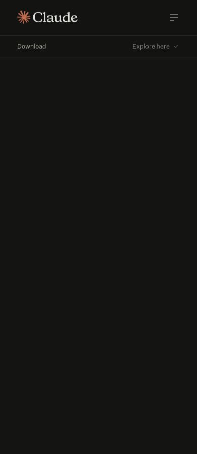

Trzech agentów przeszukało produkty AI, aplikacje budujące zaufanie i galerie typu Awwwards. Każdy typ obejrzałem na żywo w przeglądarce (desktop i telefon), bo agenci widzieli tylko tekst. Najbliżej naszego „spokoju w ciemnym pokoju” są Claude Download, Calmaria i Cozy.
Od góry strony, mobile-first. Każda sekcja ma wskazane źródło inspiracji i komponent z naszego design systemu, który już istnieje.
Ocena dopasowania do naszego design systemu i odbiorcy: rodzice, seniorzy, osoby chore, nie programiści. Wszystkie zrzuty zrobione dziś, 21.11.2026.
Agenci polecili je na podstawie treści. Na ekranie łamią zasady koloru albo są jasne. Z kilku bierzemy tylko teksty.
ChatGPT na Androidzie chowa kody QR i zostawia jeden przycisk „Android”. U nas: telefon z Androidem dostaje od razu „Pobierz APK”, komputer kod QR i krótki adres do przepisania, a iPhone informację „na razie tylko Android”.
Claude Download na telefonie pokazuje pusty ekran, dopóki skrypt nie odpali animacji wejścia (zrzut niżej). W kryzysie i przy słabym zasięgu to niedopuszczalne. U nas animacja to tylko dodatek, a cały tekst jest w HTML od pierwszej klatki.
Statyczny HTML, fonty lokalnie (~53 KB, jak w aplikacji), zrzuty w WebP, bez wideo w tle i bez animacji przewijania. Zgodnie z dystrybucją MVP: zwykły serwer plików.
Największy rozmiar w DS to step 20/28. Landing potrzebuje nagłówka „display” (ok. 40–56 px na desktopie, 32–36 px na telefonie). To decyzja do dopisania w tokenach.
verified tylko dla źródełKuszą zielone ptaszki przy „bez konta, bez reklam”. DS rezerwuje szałwię dla „to jest ze źródła oficjalnego”. Ptaszki w manifeście prywatności robimy w ink, zielony zostaje dla chipów źródeł w demie.
Żadna z galerii nie ma dobrego wzoru instrukcji instalacji APK. Projektujemy ją sami jako StepsPanel (3–4 kroki ze zrzutami z Androida) plus sumę SHA-256 do sprawdzenia (pomysł z GrapheneOS).

Claude Download na telefonie (390 px), stan po 12 s renderowania w Chrome headless.